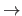

Next: と Up: 研究法や分析法に関するメモ Previous: 一対比較法や順位法のためのIRTモデル
伊藤公一朗 (2017). データ分析の力 光文社新書 P.259 -
小規模に実施したRCTの効果が，大規模に政策を実践した場合に当てはまらない場合がある。
テネシー州における，少人数学級の効果を検証したRCT  学力アップ（1986）
カリフォルニア州で少人数学級の政策が開始（1996） とても小さな効果しか得られなかった
考えられる理由として，
つまり，大規模な実践では，小規模のRCTでは生じなかった想定外の介入効果が現れることがあるということ。
Taichi Okumura